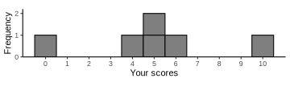
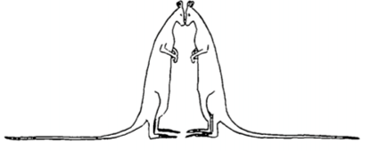
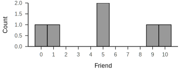
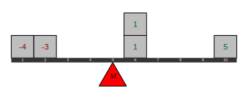

Imagine you and a friend got the following scores
How would you describe the difference in your performances?


Leptokurtotic

Platykurtotic

\(X - \mu\)
\((X - \mu)^2\)
\(SS = \Sigma(X - \mu)^2\)
\(\sigma^2 = \dfrac{SS}N\)
\(\sigma = \sqrt{\sigma^2} = \sqrt{\dfrac{SS}N}\)
| \(X\) | \(X-M\) | \((X-M)^2\) |
|---|---|---|
| 0 | -5 | 25 |
| 4 | -1 | 1 |
| 5 | 0 | 0 |
| 5 | 0 | 0 |
| 6 | 1 | 1 |
| 10 | 5 | 25 |
| \(M = 5.00\) | \(SS = 52.00\) | |
| \(\sigma^2 = 8.67\) | ||
| \(\sigma = 2.94\) |
| \(X\) | \(X-M\) | \((X-M)^2\) |
|---|---|---|
| 0 | -5 | 25 |
| 1 | -4 | 16 |
| 5 | 0 | 0 |
| 5 | 0 | 0 |
| 9 | 4 | 16 |
| 10 | 5 | 25 |
| \(M = 5.00\) | \(SS = 82.00\) | |
| \(\sigma^2 = 13.67\) | ||
| \(\sigma = 3.70\) |
\(SS = \Sigma(X - \mu)^2\)
\(SS = \Sigma X^2 - \dfrac{(\Sigma X)^2}N\)
\(X - M\)
\((X - M)^2\)
\(SS = \Sigma(X - M)^2\)
\(\sigma^2 = \dfrac{SS} {\color{red}{n-1}}\)
\(\sigma = \sqrt{\sigma^2} = \sqrt{\dfrac{SS}{\color{red}{n-1}}}\)
🂠
🂠
🂠
🃓
🂠
🂠
🃓
🃕
🂠
MetaCritic.com |
IMDb.com |
|||||
|---|---|---|---|---|---|---|
| Movie | N | M | SD | N | M | SD |
| Star Wars: Episode IV - A New Hope | 24 | 90.1 | 16.7 | 1,302,317 | 85.0 | 16.4 |
| Star Wars: Episode V - The Empire Strikes Back | 25 | 83.5 | 20.8 | 1,230,844 | 85.9 | 16.3 |
| Star Wars: Episode VI - Return of the Jedi | 24 | 63.8 | 25.2 | 1,006,122 | 82.6 | 15.5 |
| Star Wars: Episode I - The Phantom Menace | 36 | 56.4 | 22.9 | 769,435 | 65.3 | 20.3 |
| Star Wars: Episode II - Attack of the Clones | 39 | 60.3 | 22.0 | 678,519 | 66.3 | 20.2 |
| Star Wars: Episode III - Revenge of the Sith | 40 | 71.4 | 19.7 | 751,751 | 76.1 | 18.8 |
| Star Wars: Episode VII - The Force Awakens | 55 | 80.8 | 14.2 | 898,767 | 77.7 | 19.6 |
| Star Wars: Episode VIII - The Last Jedi | 56 | 84.1 | 13.5 | 602,045 | 66.6 | 24.5 |
| Star Wars: Episode IX - The Rise of Skywalker | 61 | 57.2 | 16.5 | 418,656 | 64.7 | 23.4 |
MetaCritic.com |
IMDb.com |
|||||
|---|---|---|---|---|---|---|
| Movie | N | M | SD | N | M | SD |
| Star Wars: Episode IV - A New Hope | 24 | 90.1 | 16.7 | 1,302,317 | 85.0 | 16.4 |
| Star Wars: Episode V - The Empire Strikes Back | 25 | 83.5 | 20.8 | 1,230,844 | 85.9 | 16.3 |
| Star Wars: Episode VI - Return of the Jedi | 24 | 63.8 | 25.2 | 1,006,122 | 82.6 | 15.5 |
| Star Wars: Episode I - The Phantom Menace | 36 | 56.4 | 22.9 | 769,435 | 65.3 | 20.3 |
| Star Wars: Episode II - Attack of the Clones | 39 | 60.3 | 22.0 | 678,519 | 66.3 | 20.2 |
| Star Wars: Episode III - Revenge of the Sith | 40 | 71.4 | 19.7 | 751,751 | 76.1 | 18.8 |
| Star Wars: Episode VII - The Force Awakens | 55 | 80.8 | 14.2 | 898,767 | 77.7 | 19.6 |
| Star Wars: Episode VIII - The Last Jedi | 56 | 84.1 | 13.5 | 602,045 | 66.6 | 24.5 |
| Star Wars: Episode IX - The Rise of Skywalker | 61 | 57.2 | 16.5 | 418,656 | 64.7 | 23.4 |
Is it possible for a sample to have a standard deviation of zero?
A sample of four scores has \(SS = 24\). What is the variance?
Why do samples systematically have less variability than the population?
jStat = require("https://cdn.jsdelivr.net/npm/jstat@latest/dist/jstat.min.js")
w = 800
h = 500
x = d3.scaleLinear()
.domain([-4, 4])
.range([0, w])
y = d3.scaleLinear()
.domain([0, 0.41])
.range([h-100, 100])
line = d3.line()
.x(d => x(d.value))
.y(d => y(d.density))
update_svg = {
var sample = [];
const svg = d3.select("#height-container")
.append("svg").attr("id", "heights-svg")
.attr("width", w).attr("height", h)
const curve = svg.append("path")
.attr("d", line(data))
.attr("stroke", "var(--text-color")
.attr("stroke-width", 3)
.attr("fill", "lightblue")
.attr("fill-opacity", 0.5)
const lines = svg.append("g")
.style("stroke", "var(--text-color)")
.style("stroke-width", 2)
.style("stroke-dasharray", [5,5])
const labels = svg.append("g")
.style("font-size", "0.8em")
.style("text-anchor", "middle")
.style("fill", "var(--text-color)")
lines.append("line").attr("x1", x(-3.5)).attr("x2", x(3.5))
.attr("y1", 90).attr("y2", 90)
labels.append("text").attr("x", x(0)).attr("y", 80).text("POPULATION VARIABILITY")
const sampleLine = lines.append("line")
.attr("transform", `translate(0, ${h-75})`)
const sampleLabel = labels.append("text").attr("y", h - 45).text("SAMPLE VARIABILITY")
const resetButton = svg.append("g")
.attr("transform", `translate(0, 20)`)
const sampleCircles = svg.append("g")
.attr("transform", `translate(0, ${h - 90})`)
.style("fill", "lightblue")
.style("stroke", "white")
resetButton
.append("text")
.attr("id", "button-reset")
.attr("class", "button")
.text("↻")
.attr("x", w/2)
.attr("y", h - 25)
d3.select("#button-reset").on("click", newSample)
function newSample() {
<!-- create new sample data -->
for (var i = 0; i < 10; i++) {
sample[i] = jStat.normal.sample(0, 1)
}
<!-- update circles on svg -->
sampleCircles.selectAll("circle").remove()
sampleCircles.selectAll("circle")
.data(sample)
.enter()
.append("circle")
.attr("r", 7)
.attr("cx", d => x(d))
.attr("opacity", 0)
.transition().duration(0).delay(function(d, i){return i*50}).attr("opacity", 1)
var sampleMin = Math.min(...sample);
var sampleMax = Math.max(...sample);
console.log(sampleMin)
console.log(sampleMax)
sampleLine
.attr("x1", x(sampleMin))
.attr("x2", x(sampleMax))
sampleLabel
.attr("x", x(sampleMin + (sampleMax - sampleMin)/2))
}
newSample();
}